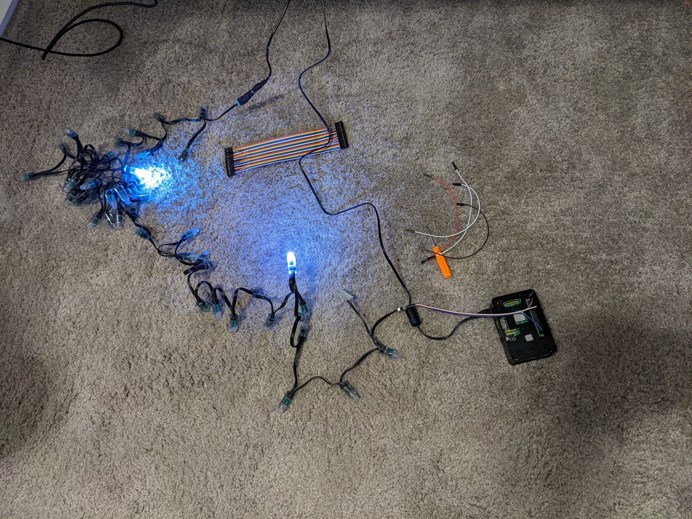

Orion
Andrews
Andrews
2D
Lighting
Lighting
Controlling LEDs in 2D
Intro
Around December of 2021, I found a video about controlling
LEDs in 3D space for a Christmas tree. It was absolutely
fascinating and I knew immediately that I wanted to do it
myself. There was one small issue though, the video was not
technical in the slightest. It was heavily based around what
the general process was but it was not a guide for how to
set up the LEDs, how to program them, or really HOW to do
anything. For those interested, the link to the video is
here.
Being a programming novice who was painfully aware of how new I was to the field, I left the project for better days.
Being a programming novice who was painfully aware of how new I was to the field, I left the project for better days.
But one day in July of 2022, a video popped into my YouTube
feed. It was pretty unassuming, just a guide on how to wire
some WS2811 LEDs. I watched the video and came to the
realization that I knew how to start!
I also knew the general process for getting the lights to a mapped state, but more importantly: I knew how to write the code.
And so my journey began.
I also knew the general process for getting the lights to a mapped state, but more importantly: I knew how to write the code.
And so my journey began.
Setup

This is where the images start but there was an intense electrical debugging session that occurred before I came close to this point, so that is what I will walk you through.
There had been some lights and a Raspberry Pi 3b hanging around my house for a while so those were the first things I got. Following the video I was recommended, I tried to wire the LEDs up. The tutorial, however useful, was not helpful for my set of lights. I got the basic principle of how to get the adapters for the lights' wiring on but there was a lot of omitted information about what pins to use on the Raspberry Pi, or which end was negative, or which end took in data and which end outputted data. It took a bit of work, but I got the idea of how to match what pin on the Pi to what connector on the lights.
Fast forward 2 days and I had the Pi wired correctly, or so I thought. I had confused the notation GPIO 18, thinking it meant PHYSICAL pin 18, it did not. After getting the wiring correct (I was able to tell by the lights flashing once when I plugged them in), I wrote some code.
I don't have the exact code I wrote to do what is being done
in the image above, but after poking around to figure out
how the Neopixel library worked, I wrote some very simple
stuff. Here is some of the first code I do have on
documentation, a refresh rate test.
import board
import neopixel
from time import sleep
from random import randint
import time
pixels = neopixel.NeoPixel(board.D18, 50, brightness = 1, auto_write = False, pixel_order = neopixel.RGB)
pixels.fill((0, 0, 0))
loops = 0
st = time.time()
while loops < 1000:
for pixel in range(0, 50):
randR = randint(0, 255)
randG = randint(0, 255)
randB = randint(0, 255)
pixels[pixel] = (randR, randB, randG)
pixels.show()
loops += 1
et = time.time()
elapsedTime = et - st
print(f"Elapsed time: {elapsedTime} seconds")
This is relatively simple compared to what you might have to
endure later, and the basic idea is the I am testing the
refresh rate of the lights. From this I was able to
understand that 50 lights can refresh at 189 hertz. That is
faster than most gaming monitors.
I also learned that the main thing that slows the lights updating was the .show() function (foreshadowing). There is also some speed loss when using random number generation like I did here, but it is only a couple of milliseconds and since all my later tests are on the same scale, it can be disregarded.
I also learned that the main thing that slows the lights updating was the .show() function (foreshadowing). There is also some speed loss when using random number generation like I did here, but it is only a couple of milliseconds and since all my later tests are on the same scale, it can be disregarded.
At this point it is important to note how the code is being
executed. All of the code I had written was executing on the
Raspberry Pi. This is because the only way to control the
lights is through the PWM pins on the Pi. Because all the
code is being executed on the Pi, all of the calculations
necessary to run the program are also being done on the Pi,
and the Pi is significantly slower than my, or anybody's,
laptop or computer. This becomes a problem later.
Also included in my version control is some prototypical code for capturing images of the lights, this code is iterated on frequently and is extremely important as the project progresses.
Another piece of inefficiency to mention is the fact that all the lights that I wish to turn on are being sent, through SSH, as arguments on the command line. Think for a second, if I had 300 lights. That's some 1000 characters required to turn the lights on. This would be remedied quickly.
Also included in my version control is some prototypical code for capturing images of the lights, this code is iterated on frequently and is extremely important as the project progresses.
Another piece of inefficiency to mention is the fact that all the lights that I wish to turn on are being sent, through SSH, as arguments on the command line. Think for a second, if I had 300 lights. That's some 1000 characters required to turn the lights on. This would be remedied quickly.
Next, I'll talk about rotation and some more expansions.